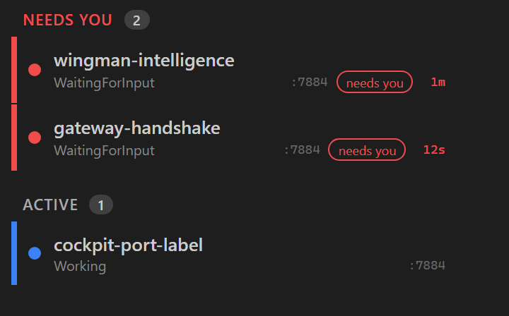
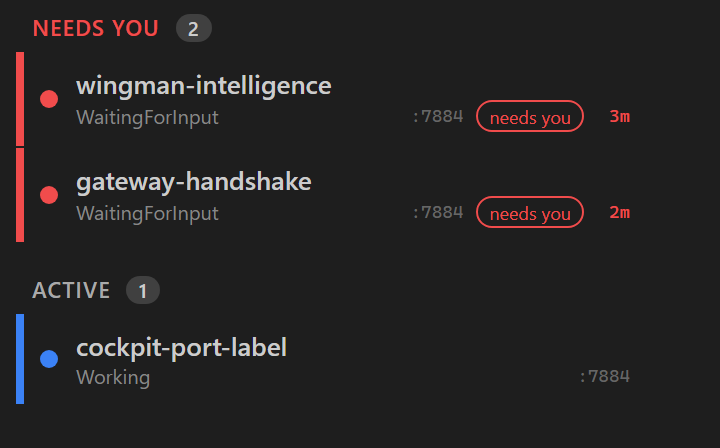

Role: Developer Agent (CenCon). Branch: issue-218-needsyou-since.
Build: dotnet build cc-director.sln -> Build succeeded, 0 Warning(s), 0 Error(s).
SessionDto.NeedsYouSince (Gateway-owned, XML-doc) in
src/CcDirector.Gateway.Contracts/SessionDto.cs.NeedsYouClock
(src/CcDirector.Gateway/Briefing/NeedsYouClock.cs), mirroring SessionAssessments:
stamps UtcNow on first red, holds it while red, clears to null when it leaves red.needsYouStampFor delegate into the /sessions
fanout loop (GatewayEndpoints.cs), called after the existing BriefingState/RailLine stamping so
SessionOrdering.EffectiveColor(s) sees this refresh's final state; backed by GatewayHost._needsYouClock.NeedsYouSince
via a new compact Waiting() helper (seconds-aware for sub-minute waits, otherwise the same
"12m" / "1h 16m" / "2d 4h" style as the existing Uptime helper), styled .needs-wait in
app.css. Re-rendered by the existing 2s roster poll.No drift. The change adds an in-memory store that mirrors an existing pattern (SessionAssessments);
no architecture container is added or removed and no security posture changes. No docs/cencon/ update required.
| # | Criterion | Expected | Actual / Proof | Result |
|---|---|---|---|---|
| 1 | New nullable DateTime? NeedsYouSince with Gateway-owned XML-doc |
Field present, defaults null, documented | Added in SessionDto.cs with full XML-doc (Gateway-owned, marks entry into red). |
PASS |
| 2 | red -> non-null; non-red -> null in /sessions |
red has timestamp, non-red is null | Integration test NeedsYouSince_is_nonNull_for_red_and_null_for_nonRed drives the real
GatewayHost /sessions fanout (red1 -> non-null, blue1 -> null). JSON shape below. |
PASS |
| 3 | Stamped within 5s of entering red | |NeedsYouSince - entry| < 5s | NeedsYouSince_is_within_5s_of_entry asserts the stamp lies in the [before-5s, after+5s] poll window. |
PASS |
| 4 | Stable (byte-identical) across polls while red | Same value on repeat polls | NeedsYouSince_is_stable_across_polls_while_red polls twice and asserts equality;
unit test Stamp_StaysRedAcrossPolls_HoldsSameValue confirms the store holds the first value. |
PASS |
| 5 | Resets strictly later on leave-then-re-enter red | 2nd episode > 1st; null in between | NeedsYouSince_resets_strictly_later_after_leaving_and_re_entering_red (null between episodes,
2nd stamp strictly later); unit test Stamp_ReEntersRed_SecondStampIsStrictlyLater. |
PASS |
| 6 | Cockpit triage NEEDS YOU rows show an elapsed-duration label from NeedsYouSince |
Label visible on a red row | Screenshot below (t0): red rows show "1m" and "12s". Render test
TriageRedRow_ShowsWaitingLabel_DerivedFromNeedsYouSince asserts the .needs-wait text. |
PASS |
| 7 | Displayed time increases on successive refreshes while red | 2nd screenshot larger value | Two screenshots of the SAME sessions: t0 = "1m"/"12s", t+120s = "3m"/"2m" (label is now - NeedsYouSince,
recomputed each poll). Render test OlderStamp_ShowsLargerValue_ThanRecentStamp. |
PASS |
| 8 | Label absent (not "0s"/stale) for non-NEEDS-YOU sessions | No label on ACTIVE/blue | Screenshots: the ACTIVE "cockpit-port-label" (blue) row shows no waiting label. Render tests
NonRedSession_HasNoWaitingLabel and RedSession_WithNullNeedsYouSince_HasNoWaitingLabel. |
PASS |
| 9 | Briefing/Explaining time not counted (clock starts only at EffectiveColor=="red") | Raw-red but briefing -> null, no label | The stamp keys off SessionOrdering.EffectiveColor(s) (folds in Briefing/Explaining/OnHold), computed
after BriefingState is stamped. NeedsYouSince_is_null_while_briefing_overlay_keeps_effective_color_off_red
asserts a raw-red+Briefing session is effective "yellow", so isRed is false. |
PASS |
Asserted by NeedsYouSince_is_nonNull_for_red_and_null_for_nonRed against a live GatewayHost
with a fake Director serving one red and one blue session. Representative fields:
[
{ "sessionId": "red1", "statusColor": "red", "activityState": "WaitingForInput",
"needsYouSince": "2026-06-14T16:45:07.41Z" }, <-- non-null (entered red)
{ "sessionId": "blue1", "statusColor": "blue", "activityState": "Working",
"needsYouSince": null } <-- null (not red)
]
Rendered by the bUnit proof-emitter SessionRailNeedsYouWaitTests.EmitProofArtifact (genuine compiled
component markup wrapped in the shipping app.css), then screenshotted. Left = t0, right = the same sessions
+120s later (proves the label ticks up). The blue ACTIVE row has no waiting label.


CcDirector.Gateway.Tests/NeedsYouClockTests.cs - 7 unit tests (set/hold/clear/reset/independent/empty-id).CcDirector.Gateway.Tests/SessionsAggregationTests.cs - 5 integration tests against the real
GatewayHost /sessions fanout (ACs 2,3,4,5,9).CcDirector.Cockpit.Tests/SessionRailNeedsYouWaitTests.cs - 6 bUnit render tests (ACs 6,7,8) + the proof emitter.Solution build clean (0 warnings, 0 errors). Full Gateway suite: 636/637 pass; the single failure
(DictationEndpointTests.FullPipeline_transcribes_phase0_clip2_with_realtime_provider) is a pre-existing
environmental test requiring a live transcription provider and is unrelated to this change (touches no audio/dictation code).
Full Cockpit suite: 30/30 pass.